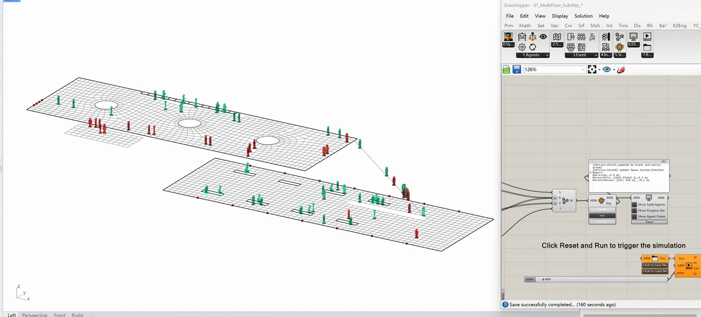
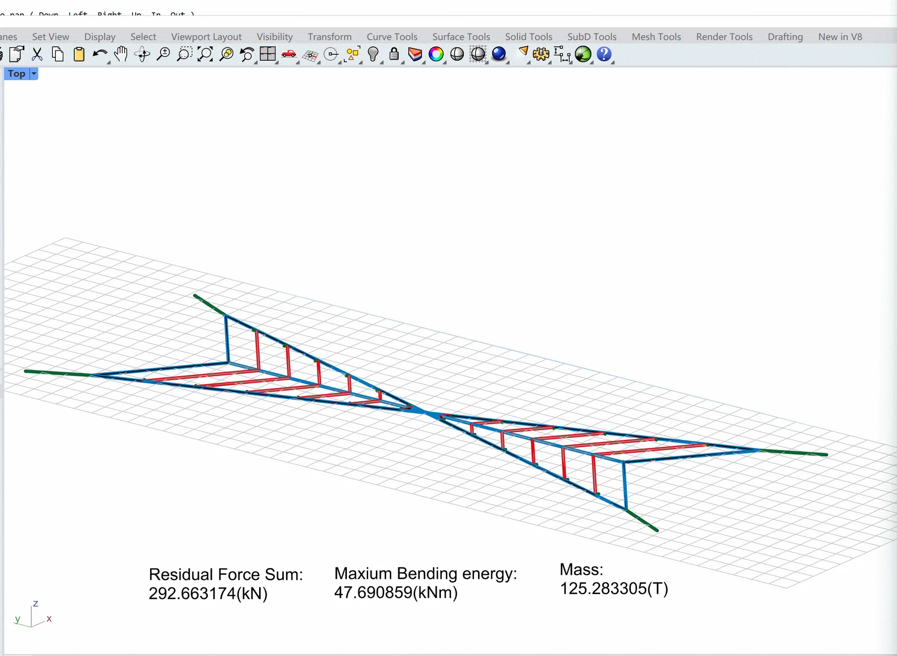
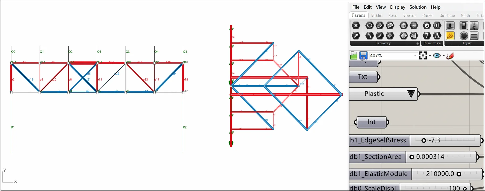

PhD in Architecture
Southeast University, China
September 2016 — December 2021Architecture · Structure · Computation
Postdoc Fellow
Assistant Researcher
School of Architecture
Southeast University
Computational methods for architectural–structural integration, translating rigorous algorithms into tools that support real design decision-making.
Yuchi Shen received his PhD from Southeast University and completed joint PhD training at ETH Zürich, establishing long-term collaboration across architecture, engineering, and computation.
Southeast University, China
September 2016 — December 2021ETH Zürich, Switzerland
September 2019 — September 2020Southeast University, China
September 2013 — June 2016Postdoctoral experience
Southeast University, China
February 2022 — PresentPrincipal Investigator
National Natural Science Foundation of China, Youth Science Fund Project. Research on Digital “Architecture–Structure” Interactive Design Methods Based on Dynamically Adapted Reused Components.
Principal Investigator
77th General Program.
Principal Investigator
72nd General Program.
Principal Investigator
17th Special Fund.
Subproject Lead
National Key R&D Program of China. Research on a Green-Performance, Intelligent Knowledge-Representation–Enhanced Foundation Model.
Key Research Member
NSFC Major Program. Task 4: Prototype Construction of Carbon-Neutral Building Technologies in High-Density Urban Environments. Grant No. 52394224.
Research Assistant
Chinese Academy of Engineering & NSFC Joint Strategic Research Project. Strategic Research on the Development of a Green and Low-Carbon Urban Renewal Technology System Toward 2040.
Shen, Y., Wang, J.-G., Shen, X., & Shi, Z. Form-finding and analyzing deployable folding structures through the synthesis of vector-based graphic statics and finite element method modelling. Thin-Walled Structures.
Shen, Y., Jasienski, J.-P., Ohlbrock, P.-O., & D’Acunto, P. Computational form-finding of single-layer spatial structures: Constructing force diagrams with vector-based graphic statics and guiding trails. Automation in Construction.
Jasienski, J.-P., Shen, Y., Ohlbrock, P.-O., Zastavni, D., & D’Acunto, P. A computational implementation of vector-based 3D graphic statics (VGS) for interactive and real-time structural design. Computer-Aided Design, 171, Article 103695.
Shen, Y., Hu, X., Wang, X., Zhang, M., Deng, L., & Wang, W. Integrated framework for space- and energy-efficient retrofitting in multifunctional buildings: A synergy of agent-based modeling and performance-based modeling. Building Simulation.
Shen, Y., & Wang, S.-Z. 因材赋形——数字图解静力学辅助下的建筑结构再利用设计研究 [Material-informed form: Building-structure reuse design aided by digital graphic statics]. World Architecture (世界建筑), (2). [In Chinese]
Shen, Y., Yang, M., Lin, Y.-L., & Wang, W. 从微观设计到宏观能效——城市建筑立面空调设备遮挡的适应性整合策略 [From micro-scale design to macro-scale energy efficiency: An adaptive integration strategy for screening façade air-conditioning units]. New Architecture (新建筑). [In Chinese]
Wang, J.-G., Sun, Y.-B., Yao, X.-Y., Shen, Y., & Xi, H.-Y. 地域建筑的文化传承与扬弃探新——大理书院建筑设计 [Cultural inheritance and critical adaptation in regional architecture: The architectural design of Dali Academy]. Architectural Journal (建筑学报), (1). [In Chinese]
Shi, Z.-Y., Dai, H., & Shen, Y.-C. A new form-evolving approach for adaptive tree-like structures using feature region principal stress lines method. Frontiers of Architectural Research. doi:10.1016/j.foar.2025.03.008 ↗
Shen, Y., Boller, G., & D’Acunto, P. Interactive architectural structural conceptualization based on three-dimensional graphic statics. Architectural Journal (建筑学报).
Shen, Y., & Wang, J. Digital structural morphology using vectorial graphic statics tools inspired by natural forms. Architectural Journal (建筑学报).
Shen, Y., & Liu, Y. Bioinspired building structural conceptual design by graphic static and layout optimization: A case study of human femur structure. Journal of Asian Architecture and Building Engineering.
National Postdoctoral Program (国家资助博士后研究人员计划), Category C.
National Excellent Engineering Survey & Design Industry Awards — Dali Academy (大理书院).
National Excellent Engineering Survey & Design Industry Awards — Jiangsu Garden Expo (Phase I): Boutique Garden Building 1 (incl. hotel) (江苏园博园〔一期〕项目——精品园林建1〔含酒店〕).
Jiangsu Province (江苏省卓越博士后).
China “Yi Xiang” (Yunnan Chuxiong) Residential Design Competition, awarded by the Yunnan Provincial Department of Housing and Urban–Rural Development.
Participant — International fib Symposium on the Conceptual Design of Structures, Switzerland.
Participant — IASS 2022 Symposium (affiliated with APCS 2022), Beijing, China.
Participant — IASS 2024 Symposium (affiliated with APCS 2024), Zürich, Switzerland.
Co-Instructor / Mentor — International Summer Design Workshop 2025 (14 days). Supervised student projects; team received the Outstanding Award, and the proposal was advanced as a subsequent built scheme (as provided).
Co-Instructor / Mentor — DigitalFuture 2025 Workshop, Deployable/Folding Structures Based on Vector-Based Graphic Statics. Coached students in computational graphic-statics workflows and supported completion of a design-to-build project.
Research translated into computational design tools.

Agent-based simulation linking spatial behavior and performance-based modelling.
View project ↗
Alternative Directional Residual Reduction method and solver for discrete network structures.
View repository ↗
Interactive force–form exploration for early-stage architectural structural design.
View repository ↗I am applying to join the Young Editorial Board of Architectural Intelligence. My research focuses on computational methods for architectural–structural integration, aiming to translate rigorous algorithms into tools that can support real design decision-making. I received my PhD from Southeast University and completed joint PhD training at ETH Zürich (2019–2020), which established long-term collaboration across architecture, engineering, and computation.
On the technical side, I am a principal developer of the Vector-based Graphic Statics (VGS) toolchain (in collaboration with UCLeuven), enabling interactive force–form exploration for early-stage structural design. I also led the development of the Alternative Directional Residual Reduction (ADRR) method and solver for equilibrium computation of discrete network structures, and developed BSim, an agent-based simulation platform linking spatial behavior and performance-based modeling. These efforts have resulted in peer-reviewed publications in journals such as Automation in Construction, Computer-Aided Design, Building Simulation, and Thin-Walled Structures.
I have served as a reviewer for leading journals including Automation in Construction and Computer-Aided Design, which has strengthened my ability to assess methodological rigor, novelty, and clarity for interdisciplinary audiences. As a Young Editorial Board member, I would contribute by providing timely and constructive reviews, supporting special issues around reproducible computational workflows and design intelligence, and helping the journal further connect advanced research with architectural practice.